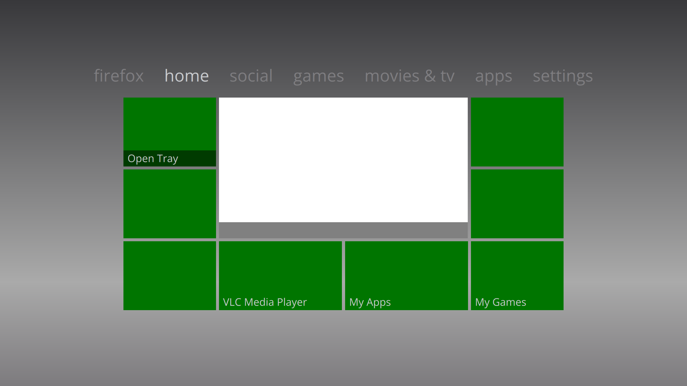
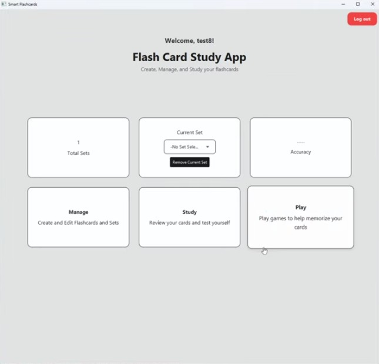
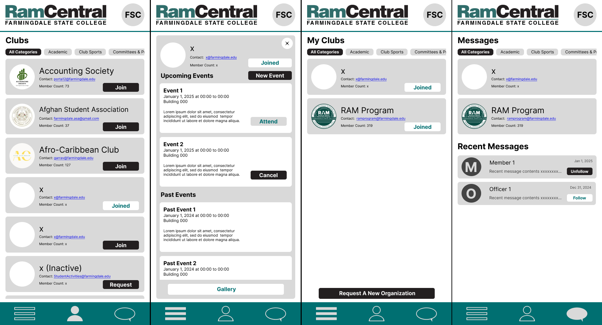

Hyprland Metro UI

This is a recreation of the XBOX 360 Metro User Interface on Hyprland with QuickShell. It was created using the Qt Quick framework from the QML library. Also contains automatic game disk reading. Created as a Personal project.
Hyprland Nier UI
Quickshell config on Hyprland inspired by the Nier Automata UI. It was created using the Qt Quick framework from the QML library. Also contains automatic game disk reading. Created as a Personal project.
Flashcard Application

Created as a project for BCS 325. Features multiple sets of flashcards, view flashcards, and play games with flashcards. Uses JavaFX for front-end, and Google Firebase for back-end.
RamCentral Revamp

Created as a project for BCS 301W. Goal was to design a business proposal, and UI, for a mobile app version of the Farmingdale State College club management website, RamCentral.